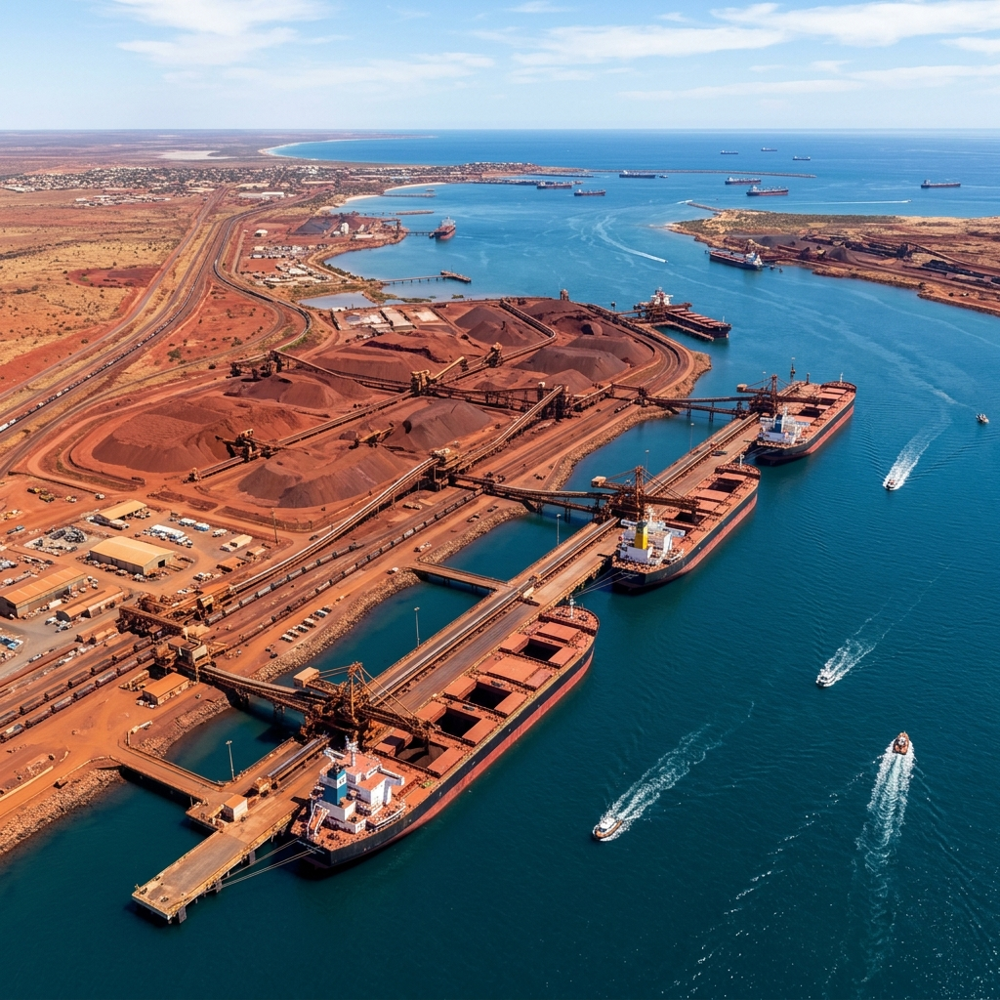

In the early hours of 8 March 2007, a Category 5 tropical cyclone crossed the Pilbara coast of Western Australia with sustained winds of 240 kilometres per hour. Outside of a handful of remote mining operations and a few hardy fishing communities, the area was largely unpopulated. But what Cyclone George struck — the iron ore infrastructure of the Pilbara — was arguably the economic engine of Australia’s entire resource boom. When George came ashore, the world felt it.
The Pilbara region of north-western Australia is one of the most geologically remarkable places on Earth. Beneath its ancient, iron-stained landscape lies one of the world’s largest and highest-grade deposits of iron ore. Extracted and exported by the hundreds of millions of tonnes each year, this ore feeds the steel mills of Japan, South Korea, and above all, China — whose voracious demand for steel during the 2000s was driving an unprecedented commodity boom. The mines of BHP and Rio Tinto in the Pilbara were not merely profitable; they were national infrastructure in the truest sense.
When Cyclone George made landfall just south of Port Hedland at 1:50 AM AWST on 8 March, it became the most intense cyclone to strike the Port Hedland region since the devastating Cyclone Joan in 1975. Peak gusts were recorded at 295 km/h. The storm wrought A$2.9 billion in damage across the region — not in homes and schools, as in Darwin or Innisfail, but in conveyor belts, ship loaders, mine structures, roads, and the temporary accommodation camps that housed the fly-in, fly-out workers who kept the operation running around the clock.
“We were sheltering in a demountable. I could hear the steel walls moving. Not vibrating — actually flexing. And then the roof lifted off and we just held onto each other in the dark.
The Human Cost
Three people died in Cyclone George — all at the Ophthalmia Dam construction camp operated by Fortescue Metals Group, south of Port Hedland. The deaths occurred when prefabricated accommodation buildings — demountables — were overturned or destroyed by the cyclone’s winds. A fourth worker in the same area survived with severe injuries.
The Ophthalmia Dam tragedy prompted an immediate investigation into the structural standards and cyclone preparedness protocols at temporary accommodation facilities at remote mine sites. It revealed a troubling gap: the fly-in fly-out workforce model, which had grown explosively during the mining boom, had outpaced the development of appropriate safety standards for the temporary structures that housed thousands of workers in cyclone-prone areas.

A Global Tremor
Iron ore shipments from Port Hedland were suspended for approximately two weeks following the cyclone. For context, Port Hedland is the world’s largest bulk export port by tonnage — shipping over 500 million tonnes of iron ore annually, with more than 80 per cent bound for China. A two-week disruption sent ripples through steel futures markets in Tokyo, London, and Shanghai.
Chinese steel mills, which at the time were operating at maximum capacity to fuel an infrastructure and construction boom of historic proportions, scrambled to find alternative supply. Spot iron ore prices climbed. Australian mining stocks moved sharply. A single tropical cyclone in a remote corner of Western Australia had reached into the global economy with unexpected force — and made visible, for perhaps the first time in mainstream coverage, just how dependent the world’s supply chains had become on a small stretch of red Australian coastline.